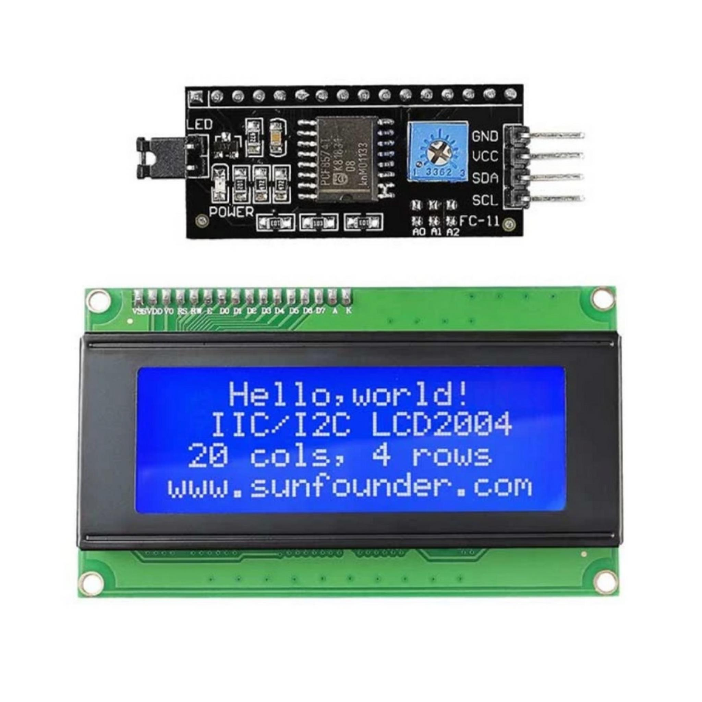

Para conectar una pantalla LCD (16x2 o 20x4) a Arduino usando I2C, utiliza el módulo adaptador I2C (PCF8574) para reducir la conexión a solo 4 pines: VCC (5V), GND, SDA (A4) y SCL (A5)
MOVIMIENTO:
#include
#include
//Crear el objeto lcd dirección 0x3F y 16 columnas x 2 filas
LiquidCrystal_I2C lcd(0x27,16,2); //
void setup() {
// Inicializar el LCD
lcd.init();
//Encender la luz de fondo.
lcd.backlight();
// Escribimos el Mensaje en el LCD en una posición central.
lcd.setCursor(10, 0);
lcd.print("Octa");
lcd.setCursor(4, 1);
lcd.print("Tomi");
}
void loop() {
//desplazamos una posición a la izquierda
lcd.scrollDisplayLeft();
delay(500);
}
SIN MOVIMIENTO:
#include
#include
//Crear el objeto lcd dirección 0x3F y 16 columnas x 2 filas
LiquidCrystal_I2C lcd(0x3F,16,2); //
void setup() {
// Inicializar el LCD
lcd.init();
//Encender la luz de fondo.
lcd.backlight();
// Escribimos el Mensaje en el LCD.
lcd.print("Hola Mundo");
}
void loop() {
// Ubicamos el cursor en la primera posición(columna:0) de la segunda línea(fila:1)
lcd.setCursor(0, 1);
// Escribimos el número de segundos trascurridos
lcd.print(millis()/1000);
lcd.print(" Segundos");
delay(100);
}